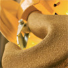
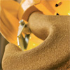
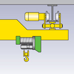
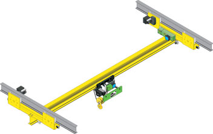
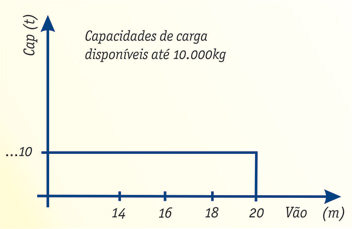

 Ponte Rolante Suspensa
Componentes padronizados e certificados
As pontes rolantes suspensas STAHL são construídas utilizando-se componentes padronizados e certificados. Transladam na aba inferior da viga de rolamento a qual é montada diretamente na estrutura do prédio, aproveitando assim o máximo de altura disponível e eliminando a necessidade de estrutura auxiliar fixada no piso.
As aproximações laterais do gancho são as menores do que qualquer outro tipo de construção de ponte rolante pois a viga principal avança além do vatilde;o do caminho de rolamento, possibilitando o máximo aproveitamento da largura do prédio.
Outra particularidade desta construção de ponte rolante é a possibilidade de combinação com outras pontes rolantes ou monovias utilizando-se de um único mecanismo de elevação e translação da carga.
Capacidades de carga disponíveis até 10.000kg.

Gráfico "capacidades" x "vãos"

Produtos STAHL:
- Ponte rolante apoiada univiga
- Ponte rolante apoiada dupla-viga
- Pontes rolantes suspensas
- Talha elétrica de corrente
- Talhas elétricas de cabo de aço
- Guindaste giratório
- Monovias
- Blocos de rodas
- Kit de componentes
Peças sobressalentes; manutenção preventiva e corretiva
Consultoria especializada em transporte e movimentação de carga e fornecimento de componentes para outros fabricantes.
Todos os equipamentos podem ser fornecidos na versão á prova de explosão.